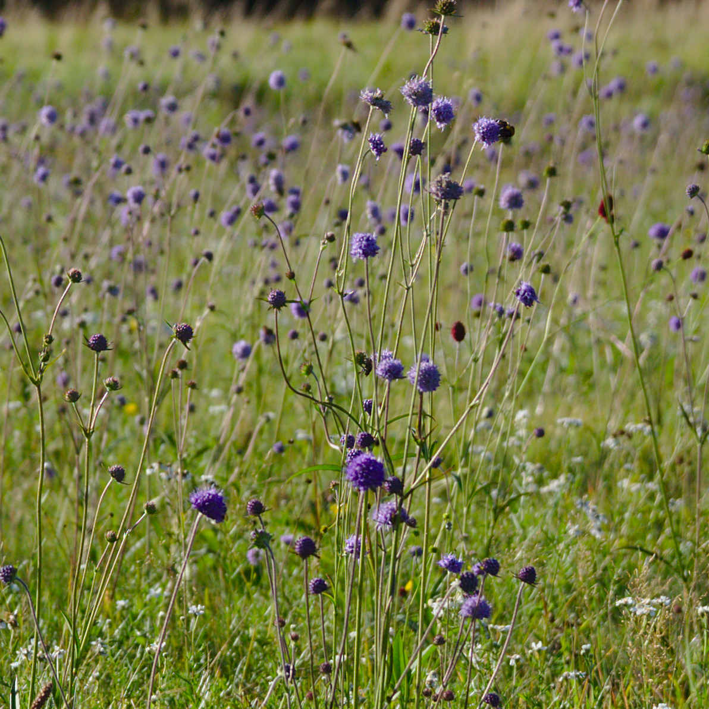
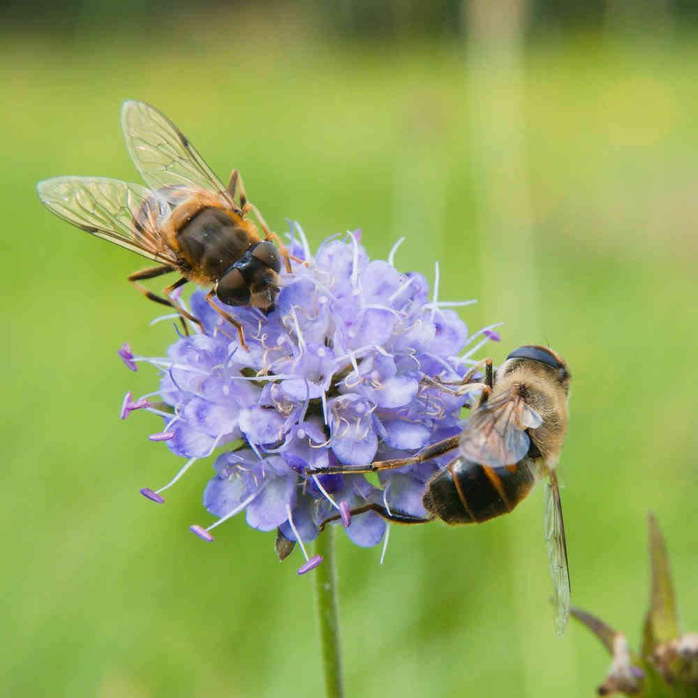
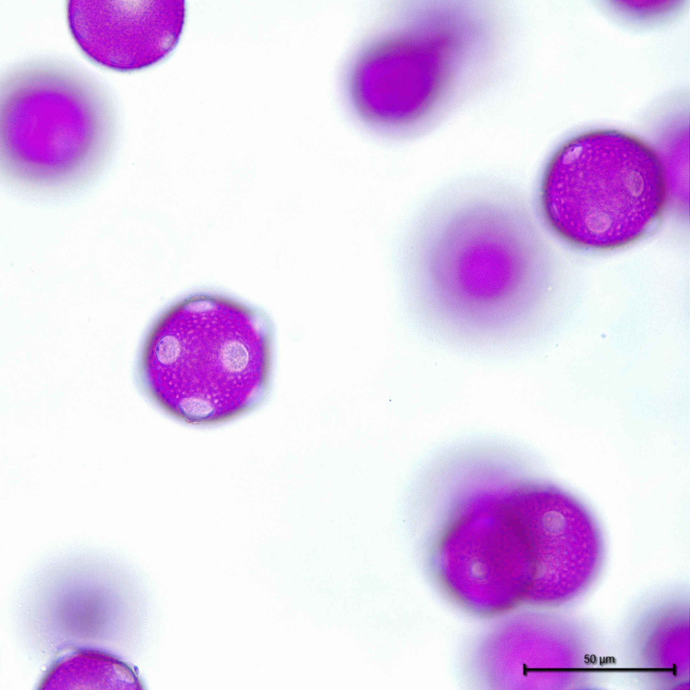
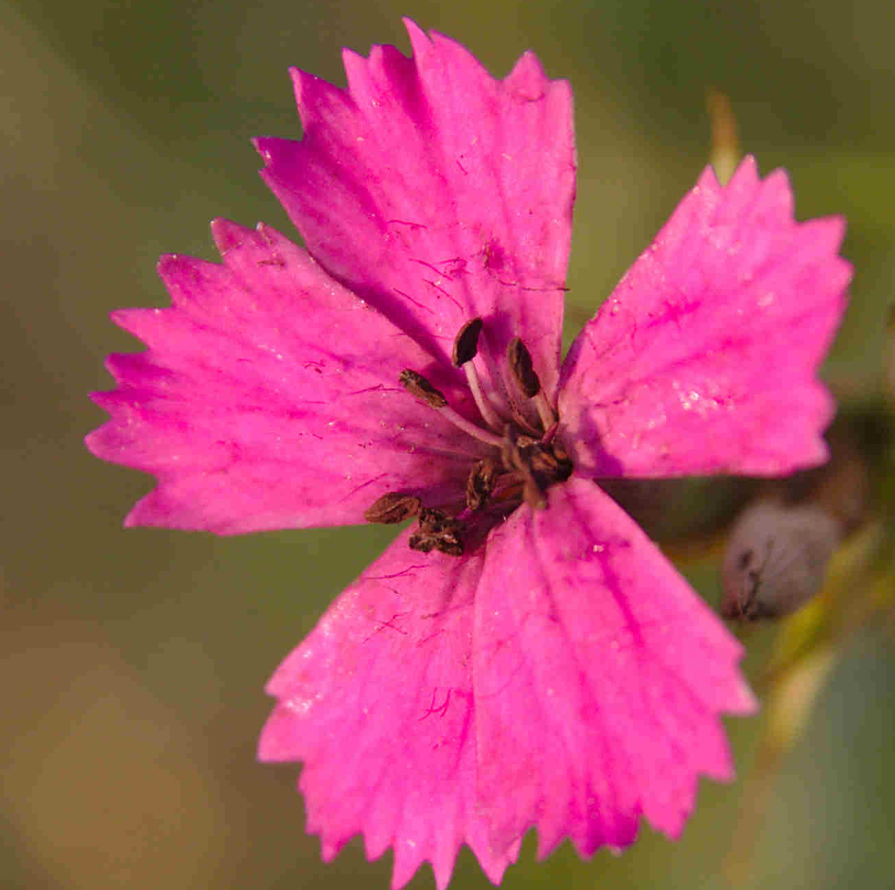

 Naším oblíbeným systémem ke studiu je luční lokalita označovaná jako Handrkov poblíž obce Vernýřov na jihozápadním Kutnohorsku. Zde dlouhodobě zkoumáme vztahy mezi kvetoucími rostlinami a jejich opylovači, přičemž nás zajímají jak jejich stálé vazby, tak i jejich meziroční variabilita. Mimo to nám hlubší poznání tohoto systému slouží jako dobrý výchozí bod ke kladení si navazujících otázek, na které zde můžeme hledat odpovědi.
 Naší oblíbenou skupinou opylovačů ke studiu jsou pestřenky (čeleď Syrphidae). V rámci našeho výzkumu zkoumáme jak jejich preference k různým vlastnostem květů, tak i další chování při výběru navštěvované rostliny a obecně i jejich roli jako opylovačů rostlin z širší perspektivy.

V rámci našeho bádání se zabýváme dynamikou uvolňování pylu rostlinami v průběhu dne a s tím spojené aktivity opylovačů. Naše hypotéza je následující:
Mohou se rostliny, které sdílí stejné opylovače, vyhnout nežádoucímu boji o jejich pozornost rozdílným načasováním uvolňování pylu a dalších odměn?
Dále se zabýváme celkovou produkcí pylu rostlinami a přenosovými kapacitami různých druhů opylovačů.
 Dalším z námi zkoumaných témat jsou i interakce rostlin, opylovačů a květních patogenů: zejména květních snětí rodu Microbotryum. Tyto sněti fakticky sterilizují své oběti a nahrazují jejich reprodukční orgány vlastními strukturami nesoucími spory. K přenosu těchto spor na zdravé rostliny pak využívají opylovače, kteří je roznáší stejně jako pyl rostlin.